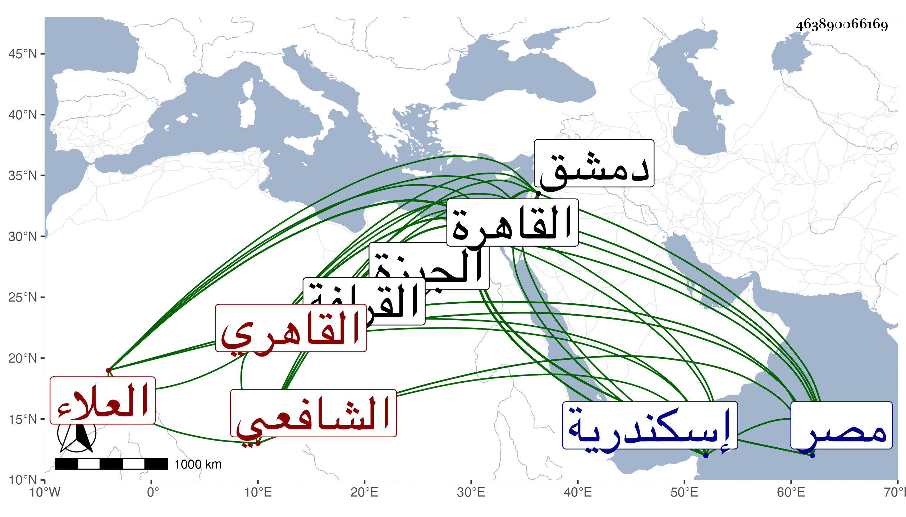

0902Sakhawi.DawLamic.ITO20230111-ara1.EIS1600.463890066169
Biography ID: 463890066169
987
علي بن محمد بن أقبرس العلاء القاهري الشافعي والد يحيى ويعرف بابن أقبرس . ولد في سنة إحدى وثمانمائة بالقاهرة ونشأ بها فحفظ القرآن ولم تعلم له فيما بلغني صبوة ، وحبب إليه الطلب بعد أن أقام عنبريا مدة وتنزل في قراء الصفة بالجمالية لطراوة صوته ثم اقتصر فيها على التصوف وصار بواسطة كونه من صوفيتها يحضر الدروس بها عند شيخها همام الدين ثم عند كل من الولي العراقي والشمس البرماوي بل قرأ على إمامها أمير حاج شرح الحاجبية للمصنف وتلا عليه وعلى الزراتيتي للسبع وكذا أخذ في النحو عن الصدر العجمي وفي المنطق في ابتدائه عن أفضل الدين القرمي الحنفي ورافق ابن الهمام في أخذه له عن الجلال الهندي وأثنى على معرفته فيه وقرأ في الفقه وغيره على الشمس البوصيري ولازم البساطي ملازمة تامة في فنون كالنحو والصرف والمعاني والبيان والمنطق والأصلين وغيرها بقراءته وقراءة غيره حتى كان جل انتفاعه به ومن قبله لكن يسيرا العز بن جماعة وحضر عند العلاء البخاري وسمع الحديث على شيخنا وغيره وتعانى الأدب وناب في القضاء للشمس الهروي في سنة سبع وعشرين فمن بعده وأضاف إليه شيخنا بأخرة قضاء الجيزة عوضا عن أبي العدل البلقيني وزاده الشرف المناوي النحرارية والفيوم والواح والنظر على ضريح أبي النجا بفوة وعلى جامع منوف وعمره من ماله وذلك في أيام الظاهر جقمق فإنه صحبه قبل ولايته ولازمه حتى عرف به فلما استقر حصل له منه حظ وصيره من ندمائه وولاه وظائف منها نظر البيوت والأوقاف ومشيخة خانقاه قوصون بالقرافة بل الحسبة بالديار المصرية ثم نظر الأحباس ولم يحمد في مباشراته وتوسع في دنياه جدا وحاول أبو الخير النحاس إغراء السلطان به فما نهض لتكرر خدمته له بالمال وغيره نعم عزله عن الحسبة وعوضه عنها الأحباس ورام مرة فيما قيل إخراجه من الديار المصرية فما تم فلما مات صودر وأخذ منه جملة وعزل من جميع وظائفه واستمر ملازما لبيته حتى مات ، وقد حج وجاور في سنة سبع وثلاثين وزار في صغره بيت المقدس وسافر إلى دمشق ودخل إسكندرية ودمياط وقاسى في وقت فاقة فامتدح الشافعي بقصيدة وأنشدها عند ضريحه فلم يلبث أن استقر جقمق فانثالت عليه الدنيا وكذا امتدح الشافعي حين استقرار السقطي في القضاء ، وكان سليم الباطن محبا للترفع في المجالس متواضعا مع أصحابه معروفا ببر أمه جهوري الصوت مقداما طلق العبارة مقتدرا على الدخول في الناس وصحبة الأتراك عالي الهمة ذا فضيلة في الجملة لكن الغالب عليه الأدب وله نظم كثير ومطارحات مع غير واحد وهو في الهجو أقعد منه في غيره وربما يقع في نظمه الجيد وكذا في نثره وهو يغوص على المعاني الحسنة إلا أنه يرضى عن التعبير عنها بأي عبارة سنحت له وقد كتب على الشفا شرحا في مجلدين فيه فوائد وكذا على أربعي النووي وعلى قطعة من منهاجه وعمل نكتا على نزول الغيث للدماميني وعلى التمهيد والكوكب كلاهما للأسنوي ولكن ليست تصانيفه بذاك ومما كتبه بآخر نكت نزول الغيث قوله :
| تأمل ما كتبت وكن نصوحا | ولا تعجل بهجوي وامتداحي |
| فلا عار موافاتي خليلا | ولا أني نسبت إلى الصلاح |
وكذا من نظمه حين أشرك معه شيخنا في مجلس الشافعية بالكبش أثير الدين الخصوصي :
| تركت الحكم حين رأيت فيه | مشاركتي مع السفل اللصوص |
| وقالوا عم فيك العزل قلنا | رضينا بالعموم ولا الخصوص |
فأجابه أثير الدين بقوله :
| تنحى عن قضاء الكبش تيس | غوي ضل عن نقل النصوص |
| ولما زاد في البلوى عموما | أتاه العزل رغما بالخصوص |
ومنه :
| أجج النحاس نارا | في الورى لما تعدى |
| كلما لاح شرارا | فنفاه وتعدى |
فأجابه النحاس بما سيجيء في ترجمته وعندي من نظمه مما كتبته عنه أشياء بل لي معه ماجريات . مات في يوم الأحد منتصف صفر سنة اثنتين وستين رحمه الله وعفا عنه ، وقد قال المقريزي في حوادث سنة ثلاث وأربعين إنه نشأ بالقاهرة في سوق العنبرانيين وطلب العلم وناب في الحكم عن الحافظ ابن حجر وصحب السلطان منذ سنين وصار ممن يتردد لمجلسه أيام سلطنته فداخل الناس منه وهم كبير ولم يبد منه إلا خير انتهى .
